Counterparty Credit Risk and CVA
This example shows how to compute the unilateral Credit Value (Valuation) Adjustment (CVA) for a bank holding a portfolio of vanilla interest rate swaps with several counterparties. CVA is the expected loss on an over-the-counter instrument or portfolio of instruments due to counterparty default. The CVA for a particular counterparty is defined as the sum over all points in time of the discounted expected exposure at each moment multiplied by the probability that the counterparty defaults at that moment, all multiplied by 1 minus the recovery rate. The Credit Value (Valuation) Adjustment (CVA) formula is:
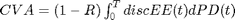
Where R is the recovery, discEE the discounted expected exposure at time t, and PD the default probability distribution.
The expected exposure is computed by first simulating many future scenarios of risk factors for the given instrument or portfolio. Risk factors can be interest rates, FX rates, equity or commodity prices, or anything that will affect the market value of the instruments. Once a sufficient set of scenarios has been simulated, the contract or portfolio can be priced on a series of future dates for each scenario. The result is a matrix, or "cube", of instrument values.
These prices are converted into exposures after taking into account collateral agreements that the bank might have in place as well as netting agreements where the values of several instruments may offset each other, lowering their total exposure.
The instrument values for each scenario are discounted to compute the discounted exposures. The discounted expected exposures can then be computed by a simple average of the discounted exposures at each simulation date.
Finally, counterparty default probabilities are typically derived from credit default swap market quotes and the CVA for the counterparty can be computed according to the above formula.
For this example we will work with a portfolio of vanilla interest rate swaps with the goal of computing the CVA for a particular counterparty.
This example can run slowly on some machines. If you have the Parallel Computing Toolbox™ installed it can improve the performance.
Contents
- Import Data 1: Read Swap Portfolio
- Import Data 2: Read Zero Curve
- Setup Tunable Simulation Parameters
- Compute Initial Prices for All Swaps
- IR Simulation 1: Setup Hull-White Single Factor Model
- IR Simulation 2: Simulate Scenarios
- IR Simulation 3: Inspect a Few Scenarios
- Price Portfolio 1: Compute Mark to Market Swap Prices
- Price Portfolio 2: Inspect Scenario Prices
- Price Portfolio 3: Visualize Simulated Portfolio Values
- Exposure 1: Compute Exposure by Counterparty
- Exposure 2: Exposure Profiles
- Exposure 3: Discounted Exposures
- Calibrating Probability of Default Curves
- CVA Computation
- References
Import Data 1: Read Swap Portfolio
The portfolio of swaps is close to zero value at time t=0. Each swap is associated with a counterparty and may or may not be included in a netting agreement.
% Read swaps from spreadsheet swapFile = 'CCR Data.xlsx'; swaps = dataset('XLSFile',swapFile,'Sheet','Swaps'); swaps.Maturity = datenum(swaps.Maturity, 'dd/mm/yyyy'); swaps.LegType = [swaps.LegType ~swaps.LegType]; swaps.LegRate = [swaps.LegRateReceiving swaps.LegRatePaying]; swaps.LegReset = ones(size(swaps.LegType)); numSwaps = numel(swaps.Counterparty); numCounterparties = max(swaps.Counterparty);
Import Data 2: Read Zero Curve
Import zero curve data and set up IRDataCurve object to interpolate dates
Settle = datenum('14-Dec-2007'); ZeroData = dataset('xlsfile', swapFile, 'Sheet', 'Zero', 'Range', 'A4:C12'); ZeroData.Date = datenum(ZeroData.Date, 'dd/mm/yyyy'); Compounding = 2; Basis = 0; % Set properties of interest-rate structure. RateSpec = intenvset('StartDates', Settle,'EndDates', ZeroData.Date,... 'Rates', ZeroData.Rate,'Compounding',Compounding,'Basis',Basis); % Create an IRCurve object (Interest Rate). We will use this for computing % instantaneous forward rates during the calculation of the Hull-White short % rate path. RateCurveObj = IRDataCurve('Zero',Settle,ZeroData.Date,ZeroData.Rate,... 'Compounding', Compounding,'Basis', Basis); figure; plot(ZeroData.Date, ZeroData.Rate, 'o-', 'MarkerFaceColor', 'b', 'LineWidth', 1.5); xlabel('Date'); datetick; ylabel('Zero rate'); grid on; title('Zero Curve at Settle Date');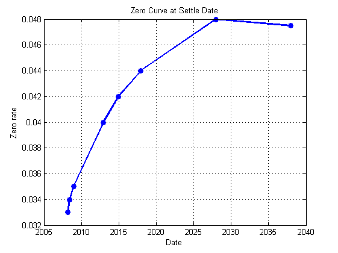
Setup Tunable Simulation Parameters
We can vary the number of simulated interest rate scenarios we generate by tuning the variable here. We set our simulation dates to be more frequent at first, then turning less frequent further in the future.
% Number of Monte Carlo simulations numScenarios = 100; % Compute monthly simulation dates, then quarterly dates later. simulationDates = datemnth(Settle+1,1:12); simulationDates = [simulationDates datemnth(simulationDates(end),3:3:74)]; stem(swaps.Maturity, swaps.LegType(:,1)*2-1, 'Marker', 'o', 'MarkerFaceColor', 'b'); hold on; plot(simulationDates, zeros(size(simulationDates)), 'r+'); datetick; legend('Swap maturities', 'Simulation dates'); ylim([-1.5 1.5]); grid on; hold off; set(gca,'YTick',[]); title('Relevant Dates');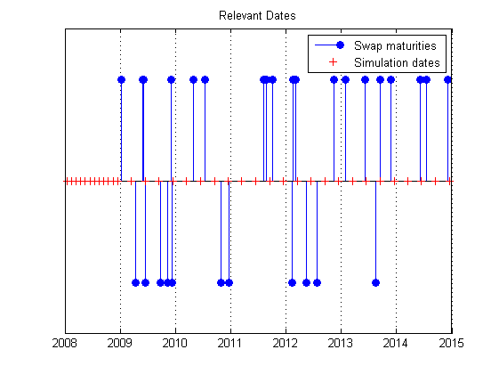
Compute Initial Prices for All Swaps
%Price swap instrument from set of zero curves currentPrices = swapbyzero(RateSpec,swaps.LegRate,Settle,swaps.Maturity,... 'Principal',swaps.Principal,'LegType',swaps.LegType,... 'LatestFloatingRate',swaps.LatestFloatingRate); % For each simulation date, compute last floating reset date per swap floatDates = cfdates(Settle-360,swaps.Maturity,swaps.Period); swaps.LastFloatingDate = zeros(numSwaps,numel(simulationDates)); for i = numel(simulationDates):-1:1 thisDate = simulationDates(i); floatDates(floatDates > thisDate) = 0; swaps.LastFloatingDate(:,i) = max(floatDates,[],2); end
IR Simulation 1: Setup Hull-White Single Factor Model
The risk factor we will simulate to value our instruments is the zero curve. For this example we will model the interest rate term structure using the one-factor Hull-White model. This is a model of the short rate and is defined as:
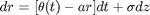
where
- 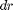: Change in the short rate after a small change in time, 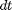
- 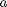: Mean reversion rate
- 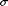: Volatility of the short rate
- 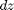: A Weiner process (a standard normal process)
- 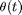: Drift function defined as:
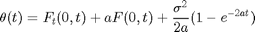
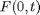: Instantaneous forward rate at time 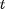
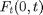: Partial derivative of 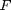 with respect to time
Once we have simulated a path of the short rate we generate a full yield curve at each simulation date using the formula:
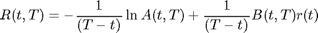
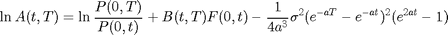
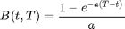
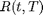: Zero rate at time for a period of 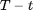
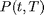: Price of a zero coupon bond at time that pays one dollar at time 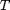
Each scenario contains the full term structure moving forward through time, modeled at each of our selected simulation dates.
Refer to "Calibrating the Hull-White Model Using Market Data" example in the Financial Instruments Toolbox™ Users' Guide for more details on Hull-White one-factor model calibration.
Alpha = 0.2; Sigma = 0.015; r0 = RateCurveObj.getZeroRates(Settle+1,'Compounding',-1); t0 = Settle; % Construct SDE object FwdRates = RateCurveObj.getForwardRates(t0+1:max(swaps.Maturity),'Compounding',-1); hullwhite1 = hwv(Alpha,@(t,x) hw1LevelFun(t0,t,FwdRates,Alpha,Sigma),... Sigma,'StartState',r0) % Store all model calibration information calibration.RateCurveObj = RateCurveObj; calibration.Tenor = ZeroData.Tenor; calibration.ShortRateModel = hullwhite1; calibration.Alpha = Alpha; calibration.Sigma = Sigma;
hullwhite1 =
Class HWV: Hull-White/Vasicek
----------------------------------------
Dimensions: State = 1, Brownian = 1
----------------------------------------
StartTime: 0
StartState: 0.0317681
Correlation: 1
Drift: drift rate function F(t,X(t))
Diffusion: diffusion rate function G(t,X(t))
Simulation: simulation method/function simByEuler
Sigma: 0.015
Level: function @(t,x)hw1LevelFun(t0,t,FwdRates,Alpha,Sigma)
Speed: 0.2
IR Simulation 2: Simulate Scenarios
For each scenario, we simulate the future interest rate curve at each valuation date using the Hull-White one-factor interest rate model.
If the Parallel Computing Toolbox is installed then the scenario generation is done in parallel using the parfor loop. This will improve performance as the scenarios are computed in parallel across all MATLAB workers.
% Pre-allocate scenarios data structure sampleScenario = hgenerateScenario(calibration,Settle,simulationDates); scenarios = repmat(sampleScenario,numScenarios,1); initialOneYearRate = RateCurveObj.getZeroRates(Settle + 365,'Compounding',-1); % Use reproducible random number generator (vary the seed to produce % different random scenarios) stream = RandStream.create('mrg32k3a','NumStreams',numScenarios, 'Seed',0); % Simulate all scenarios and compute instrument values in parallel. If you % have the Parallel Computing Toolbox, you should open a matlabpool before % running this section. for scenarioIdx = 1:numScenarios % Save state of random number generator defaultStreamLocal = RandStream.getGlobalStream(); savedStateLocal = defaultStreamLocal.State; % Setup new random number generator state for each scenario RandStream.setGlobalStream(stream); set(stream,'Substream',scenarioIdx); % Create a scenario scenarios(scenarioIdx) = hgenerateScenario(calibration,Settle,simulationDates); % Restore random number generator state RandStream.setGlobalStream(defaultStreamLocal); defaultStreamLocal.State = savedStateLocal; end
IR Simulation 3: Inspect a Few Scenarios
Create a surface plot of the yield curve evolution for a particular scenario.
for i = 1:8 clf; surf(scenarios(i).Dates, scenarios(i).Tenor, scenarios(i).Rates) axis tight datetick('x','mmmyy'); xlabel('Observation Date'); ylabel('Tenor (Months)'); zlabel('Rates'); set(gca,'View',[54.5 54]); title(sprintf('Scenario %d Yield Curve Evolution\n',i)); snapnow; end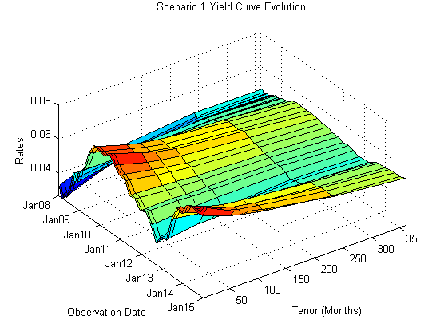 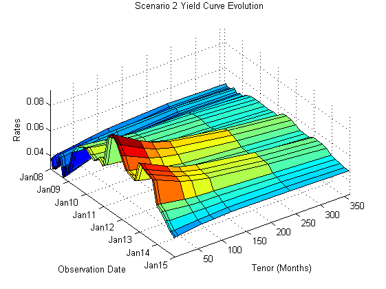 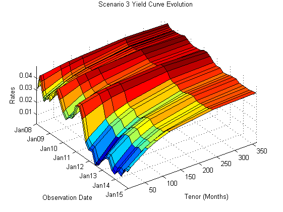 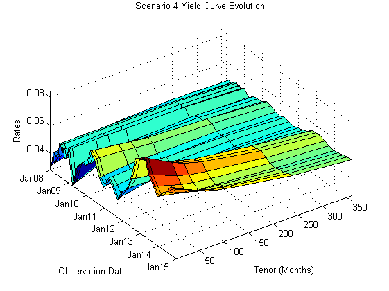 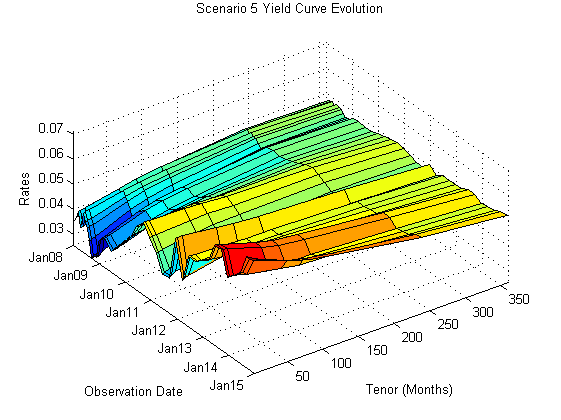 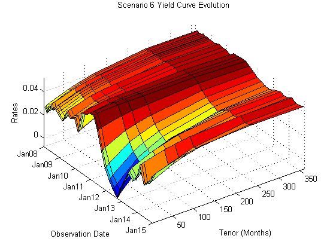 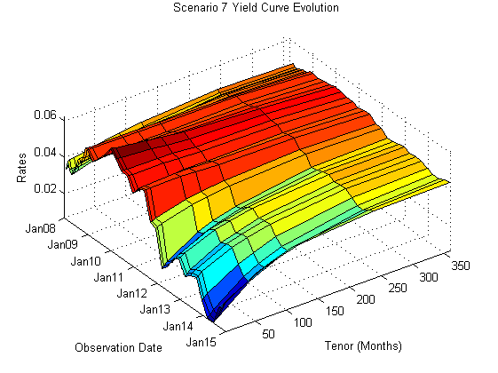 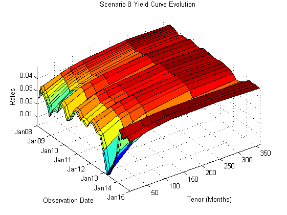
Price Portfolio 1: Compute Mark to Market Swap Prices
For each scenario the swap portfolio is priced at each future simulation date. Prices are computed using a price approximation function, hswapapprox. It is common in CVA applications to use simplified approximation functions when pricing instruments due to the performance requirements of these Monte Carlo simulations.
Since the simulation dates do not correspond to the swaps cash flow dates (where the floating rates are reset) we estimate the latest floating rate with the 1-year rate (all swaps have period 1 year) interpolated between the nearest simulated rate curves.
The swap prices are then aggregated into a "cube" of values which contains all future instrument values at each simulation date for each scenario. The resulting cube of instrument prices is a 3 dimensional matrix where each row represents an instrument, each column a simulation date, and each "page" a different simulated scenario.
% Allocate cube of simulated values: rows correspond to instruments, % columns to valuation dates, "pages" to scenarios simulatedValues = zeros(numSwaps,numel(simulationDates),numScenarios); parfor i = 1:numScenarios % Compute all mark-to-market values for this scenario. We use an % approximation function here to improve performance. scenarioValues = hcomputeMTMValues(swaps,simulationDates,... scenarios(i),Settle,initialOneYearRate); % Store results simulatedValues(:,:,i) = scenarioValues; end
Price Portfolio 2: Inspect Scenario Prices
Create a plot of swap price evolution for a particular scenario.
i = 15; clf pos = get(gcf,'Position'); set(gcf,'Position',[pos(1:2) 900 400]); subplot(1,2,1); surf(scenarios(i).Dates, scenarios(i).Tenor, scenarios(i).Rates) axis tight datetick('x','mmmyy'); xlabel('Observation Date'); ylabel('Tenor (Months)'); zlabel('Rates'); set(gca,'View',[54.5 54]); title(sprintf('Scenario %d Yield Curve Evolution\n',i)); subplot(1,2,2); plot(scenarios(i).Dates, simulatedValues(:,:,i)); datetick; ylabel('Mark-To-Market Price'); title(sprintf('Swap prices along scenario %d', i));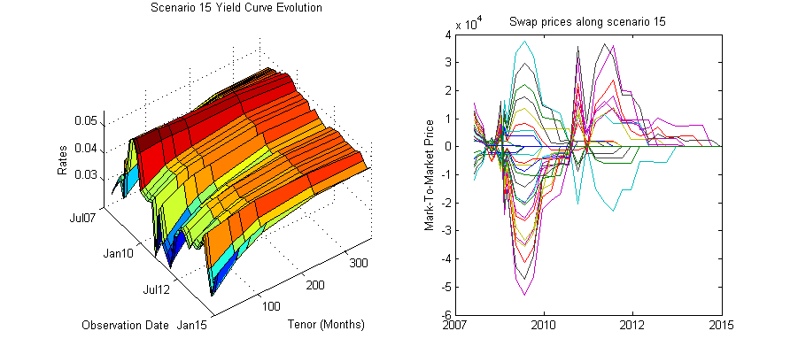
Price Portfolio 3: Visualize Simulated Portfolio Values
We plot the total portfolio value for each scenario of our simulation. As each scenario moves forward in time the values of the instruments will move up or down depending on how the modeled interest rate term structure changes. As the swaps get closer to maturity, their values will begin to approach zero since the aggregate value of all remaining cash flows will decrease after each cash flow date.
% Append initial prices/date to our simulation data values = cat(2,repmat(currentPrices,[1 1 numScenarios]),simulatedValues); dates = [Settle simulationDates]; % View portfolio value over time figure; totalPortValues = squeeze(sum(values, 1)); plot(dates,totalPortValues); title('Total MTM Portfolio Value for All Scenarios'); datetick('x','mmmyy') ylabel('Portfolio Value ($)') xlabel('Simulation Dates')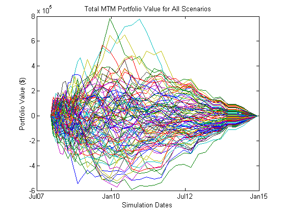
Exposure 1: Compute Exposure by Counterparty
The exposure of a particular contract (i) at time t is the maximum of the contract value (Vi) and 0:
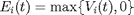
And the exposure for a particular counterparty is simply a sum of the individual contract exposures:
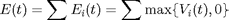
In the presence of netting agreements, however, contracts are aggregated together and can offset each other. Therefore the total exposure of all instruments in a netting agreement is
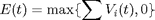
We compute these exposures for each counterparty at each simulation date.
% Additive exposure is computed at the netting set level. Exposure of an % unnetted instrument is equal to the market value of the instrument if the % instrument has positive value, otherwise it is zero. instrument_exposures = zeros(size(values)); unnettedIdx = swaps.NettingID == 0; instrument_exposures(unnettedIdx,:,:) = max(values(unnettedIdx,:,:),0); % Instruments included in a netting agreement have exposure equal to their % value when the netting agreement has positive aggregate value, otherwise % their exposure is zero. We compute this per netting agreement, but in % this case each counterparty has only a single netting agreement. for j = 1:numCounterparties nettedIdx = swaps.NettingID == j; % Exposures for instruments under netting agreements nettedValues = values(nettedIdx,:,:); nettedExposure = max(sum(nettedValues,1),0); positiveIdx = nettedExposure > 0; instrument_exposures(nettedIdx,positiveIdx) = values(nettedIdx,positiveIdx); end % Sum the instrument exposures for each counterparty exposures = zeros(numCounterparties,numel(dates),numScenarios); for j = 1:numCounterparties cpSwapIdx = swaps.Counterparty == j; exposures(j,:,:) = squeeze(sum(instrument_exposures(cpSwapIdx,:,:),1)); end
Exposure 2: Exposure Profiles
Several exposure profiles are useful when analyzing the potential future exposure of a bank to a counterparty. Here we compute several (non-discounted) exposure profiles per counterparty as well as for the entire portfolio.
- PE : Peak Exposure : A high percentile (95%) of the distribution of exposures at any particular future date. Also called Potential Future Exposure (PFE).
- MPE : Maximum Peak Exposure : The maximum peak exposure across all dates
- EE : Expected Exposure : The mean (average) of the distribution of exposures at each date
- EPE : Expected Positive Exposure : Weighted average over time of the expected exposure
- EffEE : Effective Expected Exposure : The maximum expected exposure at any time, t, or previous time
- EffEPE : Effective Expected Positive Exposure : The weighted average of the effective expected exposure
For further definitions, see for example Basel II document in references.
Here we use a function plotCPExposure to plot certain exposure profiles over the exposures computed for every scenario, for each counterparty.
for i = 1:size(exposures,1) clf plotCPExposure(dates,squeeze(exposures(i,:,:)),i); snapnow; end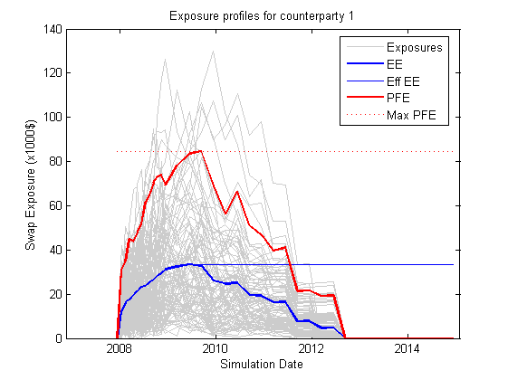 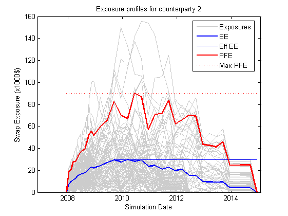 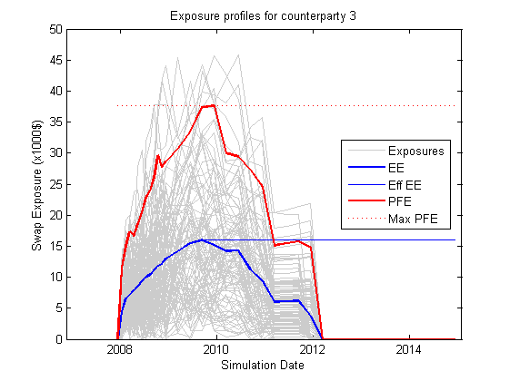 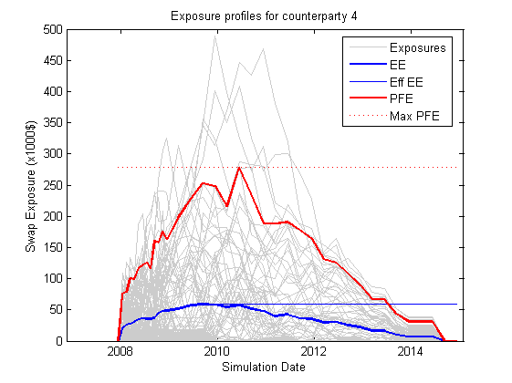 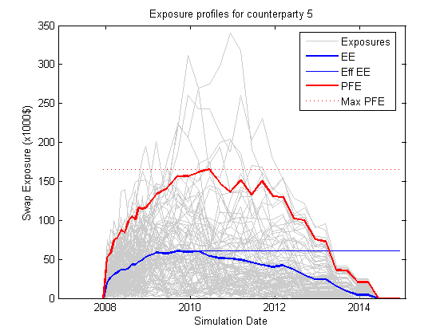
Exposure 3: Discounted Exposures
We compute the discounted expected exposures using the discount factors from each simulated interest rate scenario. The discount factor for a given valuation date in a given scenario is the product of the incremental discount factors from one simulation date to the next, along the interest rate path of that scenario.
% Get discounted exposures per counterparty, for each scenario discExp = zeros(size(exposures)); for i=1:numScenarios discExp(:,:,i) = bsxfun(@times,scenarios(i).Disc,exposures(:,:,i)); end % Discounted expected exposure discEE = mean(discExp,3); % Plot counterparty discounted EE clf plot(dates,discEE) datetick('x','mmmyy'); grid on; title('Discounted Expected Exposure for Each Counterparty'); ylabel('Discounted Exposure ($)') xlabel('Simulation Dates')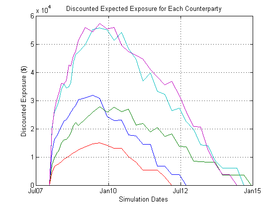
Calibrating Probability of Default Curves
The default probability for a given counterparty is implied by the current market spreads of the counterparty's credit default swaps. We use the function cdsbootstrap to generate the cumulative probability of default at each simulation date.
% Import CDS Market Information for each counterparty CDS = dataset('xlsfile', 'CCR Data.xlsx', 'Sheet', 'CDS', 'Range', 'A3:F8') CDS.Date = datenum(CDS.Date, 'dd/mm/yyyy'); CDS.Spreads = double(CDS(:,2:end)); DefProb = zeros(length(dates), size(CDS.Spreads,2)); for i = 1:size(DefProb,2) probData = cdsbootstrap([ZeroData.Date, ZeroData.Rate], [CDS.Date CDS.Spreads(:,i)],... Settle, 'probDates', dates'); DefProb(:,i) = probData(:,2); end % We plot of the cumulative probability of default for the counterparty in % question. figure plot(dates,DefProb) title('Default Probability Curve for Each Counterparty'); xlabel('Date'); grid on; ylabel('Cumulative Probability') datetick('x','mmmyy') ylabel('Probability of Default') xlabel('Simulation Dates')
Warning: Variable names were modified to make them valid MATLAB identifiers.
CDS =
Date CP1 CP2 CP3 CP4 CP5
'20/03/2008' 140 85 115 170 140
'20/03/2009' 175 120 150 205 185
'20/03/2010' 210 170 195 245 215
'20/03/2011' 265 215 240 285 275
'20/03/2012' 310 255 290 320 340
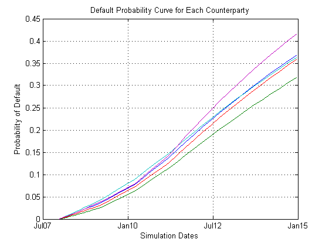 CVA Computation
The Credit Value (Valuation) Adjustment (CVA) formula is:
Where R is the recovery, discEE the discounted expected exposure at time t, and PD the default probability distribution. This assumes the exposure is independent of default (no wrong-way risk), and it also assumes the exposure were obtained using risk-neutral probabilities.
Here we approximate the integral with a finite sum over the valuation dates as:
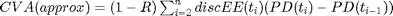
where t_1 is todays date, t_2,...,t_n the future valuation dates.
We assume CDS info corresponds to counterparty with index cpIdx. The computed CVA is the present market value of our credit exposure to counterparty cpIdx. For this example we set the recovery rate at 40%.
Recovery = 0.4; CVA = (1-Recovery) * sum(discEE(:,2:end)'.*diff(DefProb)); for i = 1:length(CVA) fprintf('CVA for counterparty %d = $%.2f\n',i,CVA(i)); end clf bar(CVA); title('CVA for each counterparty'); xlabel('Counterparty'); ylabel('CVA $'); grid on;
CVA for counterparty 1 = $2241.21 CVA for counterparty 2 = $2885.59 CVA for counterparty 3 = $982.32 CVA for counterparty 4 = $6441.87 CVA for counterparty 5 = $7424.71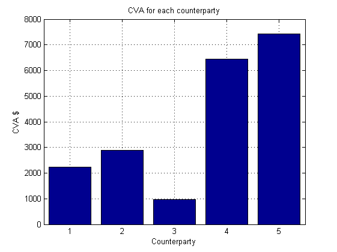
References
- Pykhtin, Michael, and Steven Zhu, A Guide to Modelling Counterparty Credit Risk, GARP, July/August 2007, issue 37, pp. 16-22. Available at: http://papers.ssrn.com/sol3/papers.cfm?abstract_id=1032522.
- Basel II: http://www.bis.org/publ/bcbs128.pdf page 256